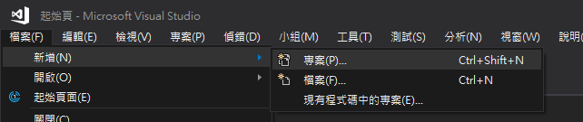
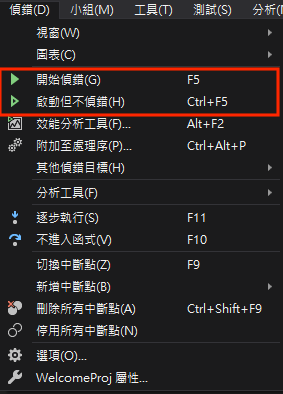

目前微軟推出的最新版本是Visual Studio 2019（2019年4月發佈），電腦教室安裝的是2017，所以我們將以2017為主。請至Visual Studio官網下載Community版本。
如果你的電腦已經有2017或是更早以前的版本則可以跳過這個步驟。
啟動安裝程式後，勾選「C++桌面開發」，接著點擊右下角安裝。安裝整個C++套件約需要6.5GB的硬碟空間，請留意硬碟空間是否足夠。
安裝過程約需要10~15分鐘。完成後Visual Studio就會啟動。
Step1. 在Visual Studio中是以專案為單位，所以我們必須先建議一個C++專案。你可以在歡迎介面直接新增，或是由選單選擇「檔案>新增>新增專案」

接著選擇Visual C++的空白專案，如果在這個畫面沒看到Visual C++，那表示C++開發套件未正確安裝。
為方案建立資料夾先取消勾選。
如果你沒有勾選, 建立出來的資料匣階層及主要檔案包括
HelloWorld\
HelloWorld.sln
HelloWorld.vcxproj
main.cpp 後續你自己在 IDE 環境中 加進去的程式檔案
data.txt 你的程式在 IDE 環境中測試時資料檔案需要放在這裡
其它
Debug\
main.obj 編譯器產生的目的程式檔案
HelloWorld.exe 連結器產生的執行檔案
其它
ipch\
其它如果你有勾選「為方案建立目錄」, 建立出來的資料匣階層及主要檔案包括
HelloWorld\
HelloWorld.sln
HelloWorld.vcxproj
其它
HelloWorld\
main.cpp 後續你自己在 IDE 環境中 加進去的程式檔案
data.txt 這個專案的程式在 IDE 環境中測試時資料檔案需要放在這裡
其它
Debug\
main.obj 編譯器產生的目的程式檔案
其它專案\
Debug\
HelloWorld.exe 連結器產生的執行檔案
其它
ipch\
其它 看到 Visual Studio 幫你建立的目錄了嗎? 在 HelloWorld\ 目錄下還有一層 HelloWorld\, Visual Studio 為什麼要這樣子做呢? 其實第一層的 HelloWorld\ 資料匣包含了「HelloWorld 方案 (solution)」所有的檔案, 第二層的 HelloWorld\HelloWorld\ 資料匣包含了「HelloWorld 專案 (project)」所有的檔案, Visual Studio 中一個「方案」可以包含多個「專案」, 每一個專案你可以選擇使用 C, C++, VB, C#, F#, html 為主要語言, 所以各自的程式檔案和資料檔案都放在自己的資料匣中, 此例中是 HelloWorld\HelloWorld\, 每一個專案可以產出 xxx.exe, xxx.lib 或是 xxx.dll 等等, 這些檔案都統一放在 HelloWorld\Debug 資料匣中。
Step 2.建立專案後，必須加入C++程式碼，由右側的方案總管選擇專案，右鍵之後依序選擇「加入>新增項目」，選擇.cpp檔案並輸入檔名，按確定即可加入。
Step 3.開始撰寫程式
Step 4.撰寫完成之後，由上方選單選取「建置>建置方案」，將程式碼翻譯為 CPU 以執行的機器語言 (快速鍵: Ctrl+Shift+B）
看到輸出顯示建置成功就表示程式碼沒有問題。
Step 5.執行測試
由選單「偵錯>開始偵錯」或是「偵錯>啟動但不偵錯」，即可執行程式。

常見問題：
Q:我在程式裡面用scanf，但是編譯階段顯示C4996錯誤，該如何解決？
A:因為傳統的scanf或是gets都無法控制輸入的長度，容易有Buffer Overflow的安全漏洞，所以不建議使用。如果你不想看到這個訊息，除了使用fgets()之外，你可以在程式碼的第一行加上：
#define _CRT_SECURE_NO_WARNINGS 這個錯誤就會被忽略了。
Q:執行時候小黑窗都一閃即逝，來不及看到結果...
A:可以在最後的return 0;該行加上中斷點，這樣程式執行到該行就會停下來了。
Reference:
丁培毅-C++物件導向程式設計實習